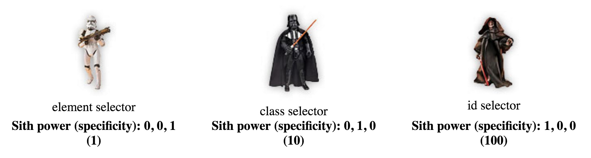
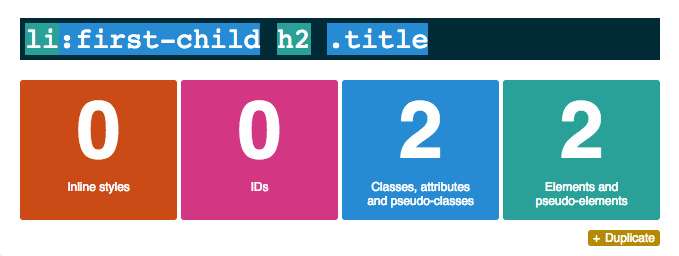

CSS Specificity (khó đọc vãi) có nghĩa là trình duyệt sẽ quyết định giá trị của CSS nào được ưu tiên cao nhất vì thế nó sẽ được áp dụng cho phần tử đang được chọn đó. Lúc mới học CSS mấy ổng dạy mình từng lôi cái này ra loè mình vì những định nghĩa phức tạp của nó, nhưng thực tế cho thấy thì ta ít khi gặp phải vấn đề phức tạp liên quan đến specificity vì mấy dev nhà ta chỉ sử dụng 1 số luật lệ cơ bản :))
Nhưng nếu chúng ta hiểu tường minh về Specificity trong CSS thì bạn sẽ giải quyết được các vấn đề liên quan đến việc tại sao viết CSS này nó chạy nhưng ở chỗ khác nó lại méo chạy? Vậy thì làm thế nào để chúng ta có thể biết được thứ tự ưu tiên của chúng để ta có thể hoàn toàn điều khiển được quy luật đó?
Các định nghĩa trong CSS Specificity
1. Nếu hai selectors cùng áp dụng vào 1 phần tử thì cái nào có specificity cao hơn sẽ được áp dụng.
2. Đây là 4 loại mức của specificity từ cao xuống thấp: inline styles, IDs, class + attributes và lements.
3. Khi 2 selector có specificity bằng nhau thì selector nào được thực thi sau sẽ ghi đè những cái trước.
Để tính được specificity cho các selectors mình có tham khảo 1 bài viết khá hay và dễ hiểu. Như thế này, 1 selector “tổng” (1 đội quân) là tổ hợp của các selector “nguyên tử” (thành viên) với các sức mạnh như sau:
- Style inline: 1000
- IDs: 100
- Class+attribute: 10
- Elements: 1
- Universal (*): 0

Ở đây không đề cập đến inline-style, dựa vào trọng số từng selector “nguyên tử” ta sẽ cộng lại để tạo ra sức mạnh của selector “tổng”:

Như vậy đội quân nào (selector “tổng”) có sức mạnh lớn hơn sẽ dành chiến thắng, tương ứng với selector sẽ được áp dụng.
Ví dụ
Ta có 1 bảng các ví dụ minh hoạ nhé:
| 1 | * { } | 0 |
| 2 | li { } | 1 (one element) |
| 3 | li:first-line { } | 2 (one element, one pseudo-element) |
| 4 | ul li { } | 2 (two elements) |
| 5 | ul ol+li { } | 3 (three elements) |
| 6 | h1 + *[rel=up] { } | 11 (one attribute, one element) |
| 7 | ul ol li.red { } | 13 (one class, three elements) |
| 8 | li.red.level { } | 21 (two classes, one element) |
| 9 | style=”” | 1000 (one inline styling) |
| 10 | p { } | 1 (one HTML selector) |
| 11 | div p { } | 2 (two HTML selectors) |
| 12 | .sith | 10 (one class selector) |
| 13 | div p.sith { } | 12 (two HTML selectors and a class selector) |
| 14 | #sith | 100 (one id selector) |
| 15 | body #darkside .sith p { } | 112 (HTML selector, id selector, class selector, HTML selector; 1+100+10+1) |
Để khỏi tính toán mệt mỏi có thằng đã làm hẳn một website để tính toán specificity nhé luôn này.

Thắc mắc nhỏ
Ta nhận thấy id cũng là 1 attribute vậy thì ở trường hợp sau selector nào sẽ thắng?
Tất nhiên là trường hợp 1 sẽ thắng đúng không nào? Trường hợp 1 specificity là 101 còn trường hợp 2 ta sử dụng attribute để chọn nên specificity là 11, kết quả đã rõ.
Kết luận
Nói là khó nhưng thực ra cũng dễ mà! Dựa vào CSS Specificity ta sẽ viết CSS 1 cách dễ dàng, gọn gàng, dễ bảo trì hơn trong nghiệp làm front-end của bản thân. Như mình thấy nhiều bố thấy style mà không nhận toàn chơi !important từa lưa luôn, sau này muốn phát triển hoặc mở rộng hay debug các kiểu cũng khó. Vậy là từ nay bạn có thể cầm cái này và đập vào đầu thằng nào khi nó viết CSS ngu, sử dụng !importan loạn lên hoặc không tối ưu nhé :))